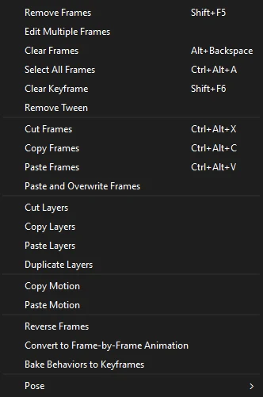
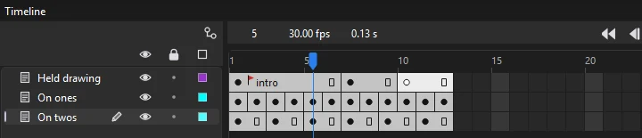
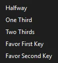
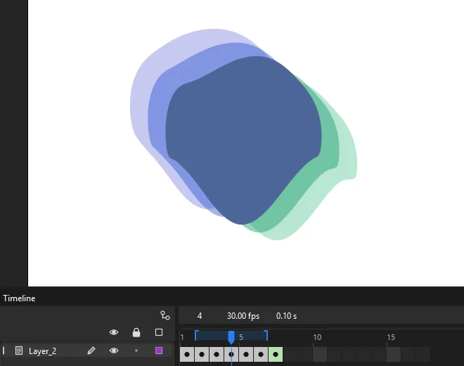
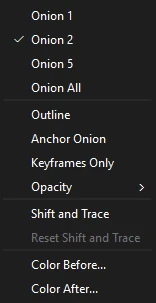
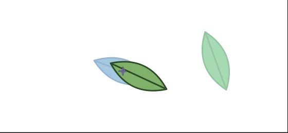

Animation
Frames and keyframes
A keyframe is a frame where the artwork changes. Ordinary frames after it hold that artwork on screen. Frame-by-frame animation is a keyframe on every frame or two; tweened animation is keyframes further apart with Phoenix filling in between.
Insert and remove frames
| Command | Shortcut | Does |
|---|---|---|
| Frame | F5 | Adds frames, extending how long the current artwork holds |
| Keyframe | F6 | Makes a keyframe that starts as a copy of the previous one |
| Blank Keyframe | F7 | Makes an empty keyframe, to draw the next drawing from scratch |
| Remove Frames | Shift+F5 | Deletes the selected frames, closing the gap |
| Clear Keyframe | Shift+F6 | Turns a keyframe back into an ordinary frame |
| Clear Frames | Alt+Backspace | Empties the selected frames, leaving the frames after them where they are |
Frame, Keyframe and Blank Keyframe are in ; the others are in . All but Clear Frames are also on the menu you get by right-clicking frames. Each acts on every selected frame, or on the playhead's frame of the current layer.
- Convert frames to keyframes: select a run of frames and press F6, and each selected frame becomes a keyframe holding what showed there. F7 turns each into an empty keyframe instead.
- Frame adds as many frames as you have selected, at the start of the selection. Past the end of a layer, it stretches the layer's last span out to the frame you clicked.
- Clear Keyframe merges the keyframe into the span before it. A layer's first keyframe can't be cleared.
- Clear Frames leaves an empty keyframe where the frames were, and the artwork after them keeps a keyframe of its own, so nothing later changes.
- Inside a motion tween, F6 adds a property keyframe without splitting the span, and F7 ends the motion there.

Frame-by-frame animation
In frame-by-frame animation you draw every drawing yourself, as on paper. It suits movement that tweens can't fake: a character turning round, cloth, splashes, a run full of overlap.
- Draw the first drawing on a keyframe.
- Press F7 on the next frame for an empty keyframe, or F6 to start from a copy of the last drawing and change it.
- Turn on onion skinning to see the drawings either side faintly while you draw the next.
- Press Enter to play it back, and , and . to flip between drawings.
A keyframe on every frame is called animating on ones. Holding each drawing for two frames, on twos, halves the drawing and still reads smoothly: make a keyframe, then press F5 to hold it a frame longer. You don't always need F6: draw on a frame that is only holding an earlier keyframe and Phoenix makes the keyframe there for you, in the same undo step as the stroke.

To turn a tween into drawings you can adjust one by one, use Convert to Frame-by-Frame Animation (see Frame commands). For animating a whole sequence with less drawing, see Tweens and easing, and the frame-by-frame lesson.
Let Phoenix draw the inbetweens
You draw the important poses, the keys, and Phoenix can draw the drawings in between them for you. Each one is an ordinary keyframe drawing, so you can fix it up by hand afterward, like a rough inbetween from an assistant.

- Draw two keys on the same layer, with empty frames between them or right next to each other.
- Click a frame between them, or select both keys.
- Choose (or right-click the frames) and pick where the new drawing goes.
- Halfway
- A drawing exactly between the two keys.
- One Third, Two Thirds
- A drawing a third or two thirds of the way from the first key.
- Favor First Key, Favor Second Key
- A drawing a quarter of the way along, close to one key, for a move that eases in or out of it.
The new keyframe goes on the frame that far between the keys. If the keys are on frames next to each other, Phoenix makes room by adding a frame after the first. Undo takes it away in one step.
draws every empty frame between two keys at once. Choose how the drawings are spaced: Even steps the same size, Ease In starts slowly with the drawings close together near the first key, and Ease Out slows to a stop near the second key. A tween on the first key is taken off, since every frame now has its own drawing.

Phoenix morphs each shape into the matching shape on the other key the way a shape tween does, colors and line widths included. If the drawings turn or twist the wrong way, add shape hints to the first key (make a shape tween between the keys to place them), and the inbetweens follow them. Symbols, groups and text that are on both keys move, turn, scale and change color part way. Anything that is only on one key, with nothing to turn into, stays as the nearer key draws it, and the status bar says how many such things there were: a vector drawing can't fade from one picture to another, so draw those parts yourself.
What the timeline shows
| Mark | Means |
|---|---|
| Filled dot | A keyframe with artwork |
| Hollow dot | An empty keyframe |
| Gray span ending in a hollow rectangle | A keyframe held over several frames |
| Lilac span with an arrow | A classic tween |
| Green span with an arrow | A shape tween |
| Blue span with diamonds | A motion tween; each diamond is a property keyframe |
| a over a dot | A keyframe with a script |
| Red flag, green slashes, gold anchor | A frame label: a name, a comment or an anchor |
To change how big the frames and rows are, or to see thumbnails of the artwork in them, use the frame view menu. Ctrl+wheel over the frames makes them wider or narrower.
Select frames
- Click a cell to select it. This also moves the playhead there and makes that layer current.
- Drag across cells, including across several layers, to select a block.
- Shift-click to extend the selection.
- Ctrl-click to add single frames anywhere, on any layer, or take them out again. Frame commands such as F6 or Clear Keyframe then act on each of them.
- (Ctrl+Alt+A) selects every frame of every layer.
To select whole spans between keyframes with one click, turn on Span Based Selection in the frame view menu.
Move, copy and stretch frames
| Do this | To |
|---|---|
| Drag a selected block | Move it to another frame or layer |
| Alt when you drop | Copy the block instead of moving it |
| Click a keyframe, then drag it | Move just that keyframe; hold Alt when you drop to copy it |
| Ctrl-drag the end of a span | Lengthen or shorten the span |
A dragged keyframe stays between the keyframes on either side of it. Ctrl-dragging the last frame of a span shows an outline of its new length as you drag; it works on tweened spans too, and a motion tween's whole motion stretches with it. Locked layers are left alone.
Frame commands
- Cut, Copy, Paste Frames
- Ctrl+Alt+X, C and V. Paste Frames inserts, pushing later frames along.
- Paste and Overwrite Frames
- Pastes over the frames already there instead of inserting.
- Reverse Frames
- Plays the selected frames backward. Select at least two frames; Phoenix makes keyframes at both ends of the selection if they aren't there, then mirrors the keyframes between, keeping how long each is held. Classic and shape tweens stay, with their eases flipped and clockwise turns made counterclockwise. Motion tweens in the selection are removed, so convert them first if you want them reversed.
- Convert to Frame-by-Frame Animation
- Turns every span in the selection into a keyframe on every frame, with the tween worked out on each, ready to adjust by hand. The tween itself is removed.
- Copy Motion, Paste Motion
- Copies a motion tween's movement and gives it to another symbol instance or text block, alone on its keyframe, as a motion tween of its own starting from where that object is.
- Remove Tween
- Removes the classic, shape or motion tween from the selected spans, leaving their keyframes. A span that had a motion tween holds its object where the motion started.
- Distribute to Keyframes
- In . Select several objects on one frame and each goes on a keyframe of its own, one after another: the bottom one stays, the next goes on the frame after, and so on.
Frame rate
The frame rate sets how many frames play each second. Set it in the Properties panel's Doc tab, in the FPS field, from 0.01 up to 120; a new document takes it from the New Document dialog, 30 unless you pick another. 24 is the film standard, 25 and 30 suit video, and 12 gives a deliberately choppy look.
- Changing the rate on its own keeps every frame, so the animation plays faster or slower. Check Scale spans beside it first and every span in every timeline and symbol stretches or squeezes to last as long as before.
- The strip above the frames shows the current frame, the frame rate and the time of the playhead in seconds.
- To count the ruler in seconds instead of frames, turn on Time in Seconds in the frame view menu.
Edit Multiple Frames
Turn on to see the keyframes within the onion skin markers in full, not faded, and to select and change their artwork together: drag a marquee over a whole run of drawings and move them all at once, for example. Hidden and locked layers are left out. Set the range by dragging the onion skin markers in the ruler; it uses that range even while onion skinning itself is off. It has no shortcut of its own, but you can give it one in Keyboard shortcuts.
Frame labels
Click a keyframe and use the Label section of the Frame tab to name it. The Type list makes it a Name (a marker scripts can jump to), a Comment (a note for yourself), or an Anchor. Labels show in the timeline, which makes long scenes easier to find your way around.

Playback
| Command | Shortcut |
|---|---|
| Play / Stop | Enter |
| Step forward one frame | . |
| Step backward one frame | , |
| Next keyframe | Alt+. |
| Previous keyframe | Alt+, |
| Rewind to the first frame | Shift+, |
| Go to the last frame | Shift+. |
| Loop playback | Alt+Shift+L |
| Enable simple frame actions | Ctrl+Alt+F |
These are in the Control menu, and the timeline header has buttons for the first frame, stepping, play, onion skin and loop. They work when the stage or timeline has focus, so they never interfere with typing in a text box or panel.
Playback runs at the document's frame rate. If a frame takes too long to draw, Phoenix skips ahead to stay in time, so what you see matches the real speed. Sounds play along, unless you turn on (Ctrl+Alt+M).
In a document with several scenes, playback runs on from the last frame of one scene into the first of the next, as the published movie does, and stops at the end of the last. With Loop Playback on over the whole scene, it goes round from the last scene to the first; a loop over part of a scene keeps to that part. Scrubbing and stepping stay within the scene shown, and playback inside a symbol stays in the symbol.
Looping a range
Turn on Loop Playback and drag the ends of the loop range in the ruler to play just part of the timeline over and over, which is ideal for polishing a cycle.
Scripts
Keyframes can carry ActionScript. Write it in the Actions panel (F9) and play it in Test Movie (Ctrl+Enter); both are described in ActionScript and Test Movie.
Frame scripts
Frames can carry scripts, and files made for broadcast often use a few of them to hold a pose or repeat a section. Turn on (Ctrl+Alt+F) and playback follows these calls in the timeline's frame scripts:
stop()- Playback stops on that frame.
play()- Playback carries on, after a
stop()earlier in the same script. gotoAndPlay(10),gotoAndPlay("walk")- Jumps to a frame number (counting from 1, as the ruler does) or to a frame label, and plays on from there.
gotoAndStop(...)- Jumps to the frame or label and stops there.
nextFrame(),prevFrame()- Steps one frame on or back and stops.
The calls can be written with this. in front. A script runs when the playhead arrives at its keyframe, but not the frame you start from, so pressing Enter on a frame with stop() plays on past it. Playback on the stage does not run the scripts: anything else in them is ignored, and so is a call it cannot be sure of, such as one inside an if, a function or a block, one aimed at another clip, or a goto to a computed frame or another scene. Scripts on guide layers are left out. To run a movie's scripts in full, use Test Movie.
The setting is off by default and is remembered. While it is on, movie clips follow the same calls in their own frame scripts, both as they play on the stage during playback and in exported movies, so a clip with stop() on its first frame holds that frame instead of looping.
Test Movie
(Ctrl+Enter) plays the movie as it will play once published, scripts and all, in a window of its own, with buttons that answer clicks and the keyboard. See Test Movie.
Onion skinning
Onion skinning shows nearby frames faintly behind the current one, so you can draw each new drawing in relation to the last. Turn it on with the onion skin button in the timeline header, or (Alt+Shift+O).

The onion skin markers are brackets in the ruler either side of the playhead, with the frames between them shaded. Drag them to set how many frames are shown, up to 99 each way; while Loop Playback is on, the ruler's handles set the loop instead. Or choose a preset and other options from (also by right-clicking the onion skin button):

- Onion 1, 2, 5, All
- How many frames to show on each side. Two is the default; All shows as many frames as the timeline has, up to 99 each way.
- Outline
- Shows the other frames as outlines only.
- Keyframes Only
- Counts drawings rather than frames: with Onion 2, the two keyframes before and the two after, however long each is held.
- Anchor Onion
- Keeps the onion skin on the frames it covers when you turn this on, instead of moving with the playhead: step through a run of frames and compare each with the same few. Drag the markers in the ruler to change which frames it stays on.
- Opacity
- 25, 45, 65 or 85% for the nearest frames; frames further away fade more.
- Shift and Trace
- Lets you move the faint copies around to trace over them (see below).
- Reset Shift and Trace
- Puts every moved copy back where its frame has it.
- Color Before, Color After
- The tints for earlier and later frames.
Locked and hidden layers are left out of onion skinning, so lock the background to keep it from cluttering the view. Inside a symbol, locked layers show too. The settings are remembered for next time.
Shift and Trace
When you draw in-betweens by hand, the drawing you want to copy is often in the wrong place: a leaf that falls across the stage, a head that turns, a bouncing ball. Shift and Trace lets you slide, turn and resize the faint onion skin copy of another frame so it sits right under where the new drawing goes, and trace over it. The other frame itself does not change at all; only its faint copy on the stage moves.

- Turn on the onion skin and go to the frame you want to draw.
- Choose (or right-click the onion skin button). The pointer becomes a four-way arrow.
- Drag a faint copy to move it. Hold Shift as you start dragging to turn it around its middle, or Alt to make it bigger or smaller. Drag on an empty spot to move the nearest earlier copy.
- Turn Shift and Trace off again to draw. The copies stay where you put them, so you can trace over them, step to other frames and come back.
- Choose Reset Shift and Trace when you are done.
Moved copies are only a drawing aid: nothing about them is saved, exported or undone, and they go back to their places when you open another document.